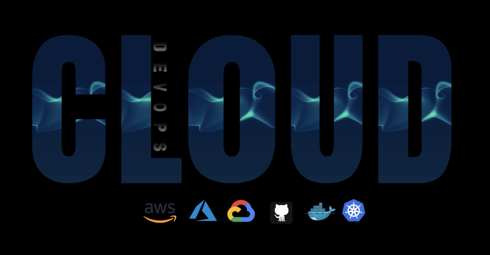

Experiencia
A lo largo de meses de inmersión en el fascinante universo de Cloud & DevOps desarrollé diversos proyectos que me permitieron evolucionar en este campo, destacando mi trabajo práctico y mi capacidad para gestionar y colaborar en equipo. Mis aptitudes abarcan desde Google Kubernetes Service (GKS) hasta el control de versiones, el uso de GitHub, la administración de sistemas Linux, y la aplicación de metodologías ágiles. Asimismo.
Me especializo en el despliegue de pipelines con integración continua (CI&CD), monitorización, seguridad, y bases de datos en diversas plataformas como AWS, GCP y Azure. Además, en el despliegue de contenedores, y en la administración de estos mediante Docker y Kubernetes. Mi pericia también abarca la administración de sistemas Linux y Bash con el uso de Ansible. Todo este conocimiento se ha aplicado bajo modelos de organización de trabajo como Scrum o Kanban, dependiendo de las necesidades específicas de cada proyecto.
Técnico de redes N1/N2 Abai ·
Monitoreo de Redes y Solución de Problemas: Se realiza un seguimiento constante de las redes y se resuelven los problemas que surgen.
Gestión de CUCM: Se maneja el Cisco Unified Communications Manager (CUCM) para administrar las comunicaciones unificadas con herramientas como OMI plataformas, Splunk Cloud. Gestión de DF Secure CT:herramientas importantes en el campo de las redes. Herramientas de Ticketing: Se utilizan varias herramientas de ticketing, incluyendo Remedy, SNOW, para manejar y rastrear los problemas reportados. Conocimiento de la Estructura de Red: Se tiene un conocimiento de la estructura de red, incluyendo VPN-IP, MacroLAN, SDWAN. Esto permite una mejor comprensión y gestión de las redes.